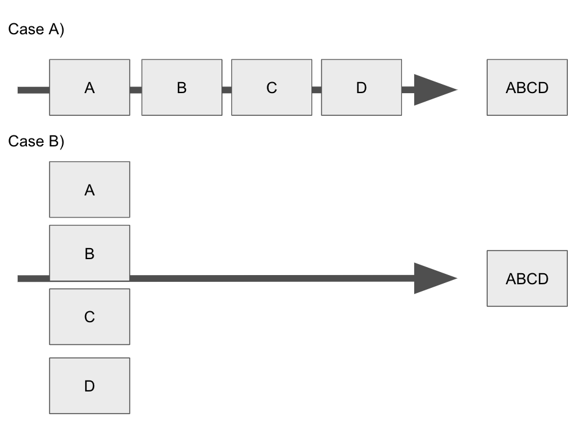
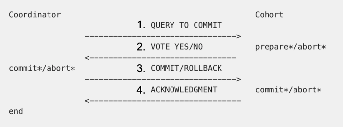

two phase commit
2단계 커밋 프로토콜
Two-phase Commit -> 트랜잭션
시작과 끝이 있는 독립적인 일 여러 개를 하나로 묶어놓고 그 중 어느 하나라도 실패하면 모든 일들을 시작하기 전 상태로 돌리는 하나의 작업 단위

ACID
(원자성, 일관성, 고립성, 지속성)
ACID : 트랜잭션이 안전하게 수행된다는 것을 보장하기 위한 4가지 성질
고립성(isolation)

다수의 트랜잭션이 동시에 수행되더라도 한번에 하나씩 수행되는 것과 동일한 결과를 가져야 하는 성질
지속성(Durability)
성공적으로 수행된 트랜잭션은 영원히 반영되어야 함을 말합니다.
비휘발성 저장장치(하드디스크나 디스크 등과 같은 보조기억장치)에 저장이 됩니다.
2PC(Two-phase commit)

트랜잭션을 커밋할지, 롤백할지에 대한 분산 트랜잭션에 관여하는 분산 알고리즘
coodinator(코디네이터) : 트랜잭션을 만드는 트랜잭션 관리자
cohort : 코디네이터가 보낸 트랜잭션에 대해 예/아니오 상태로 작업 준비 상황을 알립니다.
작업요청 단계
1. 코디네이터는 코호트에게 커밋이 가능한지에 대한 메시지를 전송하고 응답을 기다립니다.
각 코호트 (2개 이상)는 vote(투표) 메시지를 전송합니다. 작업준비 여부에 따라서 yes/no를 전송합니다.
반영 단계
1. 성공 시에 코호트에 커밋 메시지를 전송, 리소스 락을 풉니다.
실패 시에는 코호트에 rollback 메시지를 전송 후 undo log를 이용해서 원래 상태로 복구하고 리소스 락을 해제합니다.
2. 각 코호트는 트랜잭션 관리자에게 acknowlegment(승인)를 전송합니다.
성공이면 작업을 완료, 실패하면 트랜잭션을 복구합니다.
2pc의 문제점
2pc를 사용하면서도 문제점이 발생할 수 있습니다.
코호트가 전송한 vote 메시지를 코디네이터가 죽어서 commit이나 rollback 메시지를 보내지 못하면
yes 메시지를 보낸 코호트가 안전하게 상태를 회복할 방법이 존재하지 않습니다.
이는 yes 메시지를 보낸 코호트의 상태가 undefind이기 때문입니다.
이에 관해서는 3pc(three phase commit)에 대해서 더 공부할 필요가 있습니다.
또한 각각 다른 특징을 가진 DB를 분리한 상황에서는 구현이 쉽지 않습니다.
DB
DB의 클러스터링 기법(비슷한 데이터끼리 묶어주는 머신러닝 기법)에 주로 사용되는 편이며
mysql에서는 NDB cluster가 2PC를 이용하고 있고, 오라클에서도 7.0 버전 이후에서 제공되고 있습니다.
국내에는 GOLDILOCKS(골디락)가 있습니다.